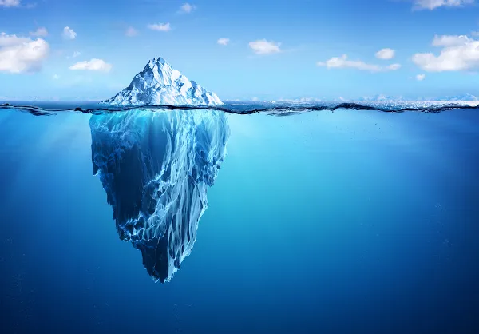

iceberg.comBR

Provavelmente você já viu essa imagem sendo representado de várias formas na internet desse iceberg, não é?
Bom, caso você não esteja por dentro da bolha sobre os conteúdos de iceberg que são apresentados de formas diferentes na internet, irei te explicar de forma bem resumida.
Um iceberg é um grande bloco de gelo que vagueia pelo mar, beleza esse é o conceito básico sobre um iceberg, porém no sentido da internet, é um conteúdo voltado para implementação de tópicos com informações que envolvam curiosidades, mistérios e entre outros.
Além disso, estes tópicos conforme um tipo de informação que ela contém, ficam separadas dentro de uma camada do iceberg, essas camadas são representadas da seguinte forma que dependendo do tema que um iceberg será apresentado, no básico as camadas de um iceberg são apresentadas dessa forma, a primeira camada é a Superficie, a segunda é Águas rasas e por último a terceira é Obscuro.
Cada camada apresentam tópicos referentes ao seu tipo de conteúdo, como por exemplo a camada Superfície, ela irá apresentar tópicos que não são tão nocivos, normalmente são mais tranquilos, a camada Águas rasas apresenta tópicos que algumas são tranquilas e outras são bizarras, e por último a camada Obscuro, pode apresentar tópicos que são nocivos para algumas pessoas.
Bem, é isso espero que você tenha entedido sobre o conteúdo de iceberg na internet.
Aqui ficará os principais icebergs escrito pelos usuários, porém no momento não há nenhum iceberg a ser visto aqui.
Então caso se você tiver alguma ideia ou já existente de um iceberg, coloque a imagem e depois um texto explicando sobre, e depois enviar ele para mim, para que eu possa adicionar aqui e dar os créditos por isso, entre em contato através desse e-mail: lordlg190@gmail.com